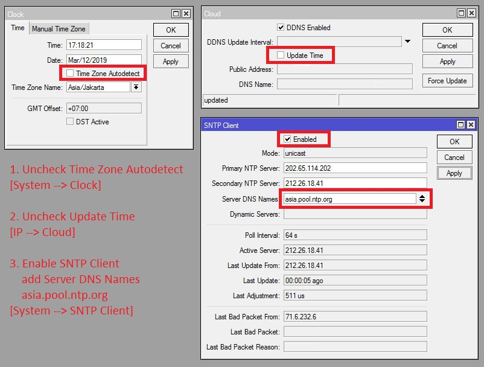
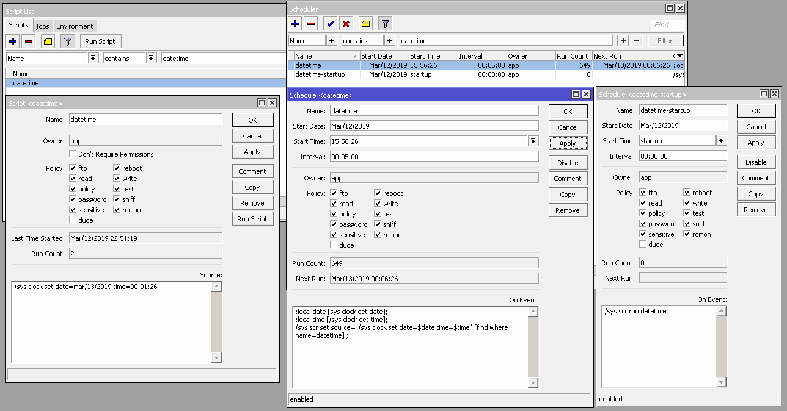
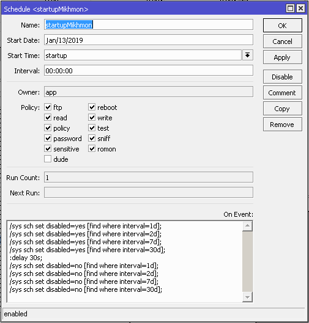

User expired atau terhapus setelah reboot?
User terhapus itu karena jam dan tanggal tidak terupdate dengan cepat, jam dan tanggal Mikrotik hanya
mengandalkan ntp server untuk update tanggal dan jamnya, bisanya kalau server ntp yang bagus, itu butuh 3 -
5 detik, jika tidak maka jam dan tanggal akan menjadi default pabrik Mikrotik.
Jika jam dan tanggal tidak diupdate dengan cepat, maka user akan otomatis menjadi expired, sesuai dengan
validity user masing masing.
Misal user dengan validity 1d, seharusnya 31 Desember habis, Mikrotik kemudian di reboot dan jan tanggal
tidak segera terupdate, maka tanggal menjadi jan/01/1970 00:00:00, ketika tanggal Mikrotik jauh lebih kecil
dari interval atau validity seharusnya yg 1d maka script expired akan dieksekusi.
User hotspot tiba-tiba expired?
Ada beberapa kasus terjadi user hotspot baru dipakai beberapa detik sudah langsung expired.
Hal itu disebakan oleh jam atau tanggal yang tidak sesuai. Penjelasannya sebagai berikut.
Detail pengaturan pada gambar berikut.

(Set last Date & Time) Solusi pertama untuk menghindari user terhapus setelah RB reboot.
1. Buat script (System --> Script) dengan
Name: datetime
2. Buat scheduler (System --> Scheduler) dengan
Name : datetime
Interval : 00:05:00
On event sebagai berikut
:local date [sys clock get date];
:local time [/sys clock get time];
/sys scr set source="/sys clock set date=$date time=$time" [find where name=datetime];
3. Buat schedule (System --> Scheduler) dengan
Name : datetime
Start Time : startup
Interval : 00:00:00
On event sebagai berikut
/sys scr run datetime
Cara kerja.
Scheduler akan menyimpan date dan time ke script setiap 5 menit, atau sesuai kebutuhan Anda, silakan ubah interval di scheduler datetime.
Ketika power off kemudian Mikrotik dinyalakan kembali, maka date dan time akan dikembalikan sesuai data yang tersimpan di script datetime.
Dan selanjutnya akan update otomatis sesuai pengaturan di SNTP-Client.
Detail pengaturan pada gambar berikut.

(Delay Startup) Solusi kedua untuk menghindari user terhapus setelah RB reboot.
Seperti penjelasan sebelumnya, user hotspot terhapus setelah reboot disebabkan oleh jam dan tanggal yang
telat update.
Brikut trik untuk menghindarinya, dengan membuat scheduler untuk disable dan enable scheduler user hotspot
saat startup.
Buat scheduler (System --> Scheduler) dengan
Start Time : startup dan On event sebagai berikut
/sys sch set disabled=yes [find where interval=1d];
/sys sch set disabled=yes [find where interval=2d];
/sys sch set disabled=yes [find where interval=7d];
/sys sch set disabled=yes [find where interval=30d];
:delay 30s;
/sys sch set disabled=no [find where interval=1d];
/sys sch set disabled=no [find where interval=2d];
/sys sch set disabled=no [find where interval=7d];
/sys sch set disabled=no [find where interval=30d];
*Sesuaikan interval dan delay pada script dengan kebutuhan Anda.
*interval = validity user profile.
Detail pengaturan pada gambar berikut.
